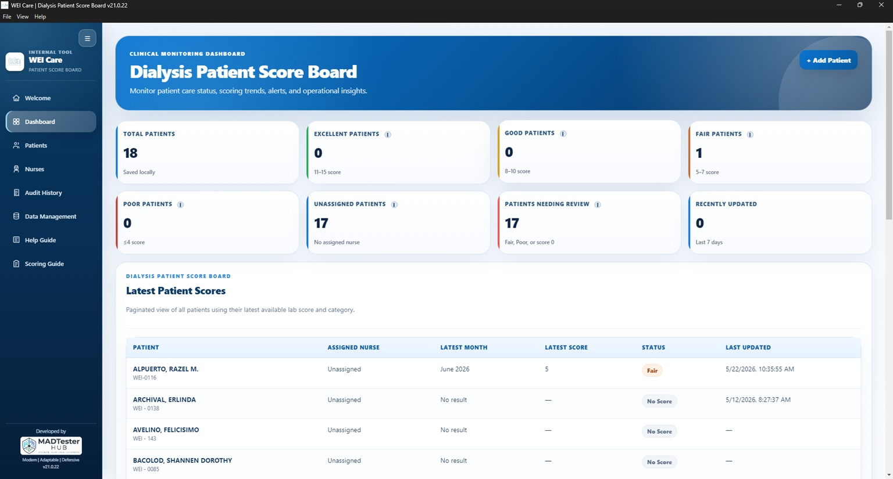
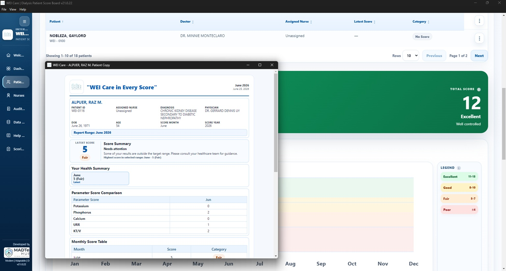
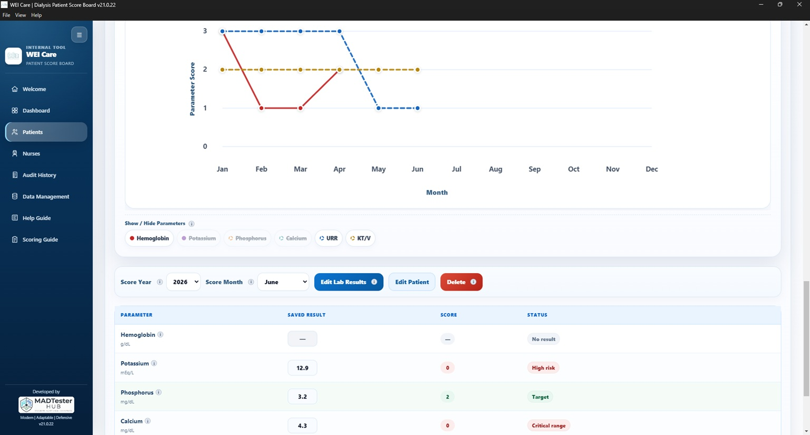

Dashboard

Dashboard
Main dashboard for reviewing healthcare and operational performance indicators.
Healthcare Dashboard
A healthcare-focused scorecard system designed to help monitor dialysis-related indicators, patient performance metrics, and operational reporting.
Case Study
Clean layout, simple navigation, practical workflows, and business-friendly information display.
Web design, UI/UX, dashboard design, workflow analysis, Photoshop, AI-assisted content, and QA validation.
Screenshots

Main dashboard for reviewing healthcare and operational performance indicators.

Scorecard screen for tracking patient-related metrics and performance values.

Analytics view designed to summarize patterns, results, and operational insights.
More Projects